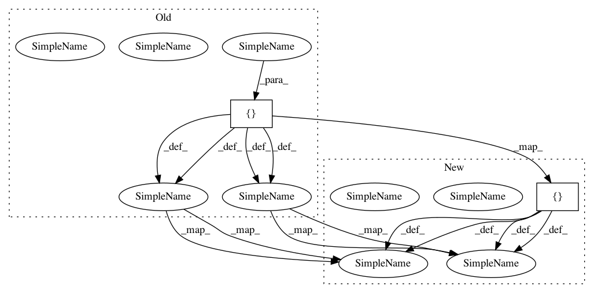

68ecc8cb88cd5fdf027cff4aacce356796febd4c,examples/example_sectors_and_intergration.py,,,#,21
Before Change
rect_sector = acoular.RectSector(x_min=-0.5,x_max=-0.4, y_min=-0.15, y_max= 0.15)
//list of points containing x1,y1,x2,y2,...,xi,yi
poly_sector = acoular.PolySector(edges=[-0.1, -0.1, -0.1, -0.2, -0.2, -0.25, -0.25, -0.1, -0.3, -0.2 ])
//multisector allows to sum over multiple different sectors
multi_sector = acoular.MultiSector( sectors = [circle_sector,rect_sector,poly_sector])
//calculate the discrete frequencies for the integration
fftfreqs = arange(block/2+1)*(51200/block)
//integrate SPL values from beamforming results using the shapes
levels_circ = acoular.integrate(bf.result, rg, circle)
levels_rect = acoular.integrate(bf.result, rg, rect)
levels_poly = acoular.integrate(bf.result, rg, poly)
//integrate SPL values from beamforming results using sector classes
levels_circ_sector = acoular.integrate(bf.result, rg, circle_sector)
levels_rekt_sector = acoular.integrate(bf.result, rg, rect_sector)
levels_poly_sector = acoular.integrate(bf.result, rg, poly_sector)
levels_multi_sector = acoular.integrate(bf.result, rg, multi_sector)
//plot map and sectors
figure()
After Change
rect_sector = acoular.RectSector(x_min=-0.5,x_max=-0.4, y_min=-0.15, y_max= 0.15)
//list of points containing x1,y1,x2,y2,...,xi,yi
poly_sector = acoular.PolySector(edges=[ -0.25, -0.1, -0.1, -0.1, -0.1, -0.2, -0.2, -0.25, -0.3, -0.2])
//multisector allows to sum over multiple different sectors
multi_sector = acoular.MultiSector( sectors = [circle_sector,rect_sector,poly_sector])
//calculate the discrete frequencies for the integration
fftfreqs = arange(block/2+1)*(51200/block)
//integrate SPL values from beamforming results using the shapes
levels_circ = acoular.integrate(bf.result, rg, circle)
levels_rect = acoular.integrate(bf.result, rg, rect)
levels_poly = acoular.integrate(bf.result, rg, poly)
//integrate SPL values from beamforming results using sector classes
levels_circ_sector = acoular.integrate(bf.result, rg, circle_sector)
levels_rekt_sector = acoular.integrate(bf.result, rg, rect_sector)
levels_poly_sector = acoular.integrate(bf.result, rg, poly_sector)
levels_multi_sector = acoular.integrate(bf.result, rg, multi_sector)
//plot map and sectors
figure()
In pattern: SUPERPATTERN
Frequency: 4
Non-data size: 2
Instances
Project Name: acoular/acoular
Commit Name: 68ecc8cb88cd5fdf027cff4aacce356796febd4c
Time: 2020-06-17
Author: s.jekosch@tu-berlin.de
File Name: examples/example_sectors_and_intergration.py
Class Name:
Method Name:
Project Name: explosion/spaCy
Commit Name: c71123dd0c91766c4d8f890c3d2c6660f6deee16
Time: 2019-03-22
Author: sofie.vanlandeghem@gmail.com
File Name: spacy/sandbox_test_sofie/testing_el.py
Class Name:
Method Name: create_kb
Project Name: explosion/spaCy
Commit Name: 26afa4800f16901a4bda3be8d0b84e64905202b8
Time: 2019-03-21
Author: sofie.vanlandeghem@gmail.com
File Name: spacy/sandbox_test_sofie/testing_el.py
Class Name:
Method Name: create_kb